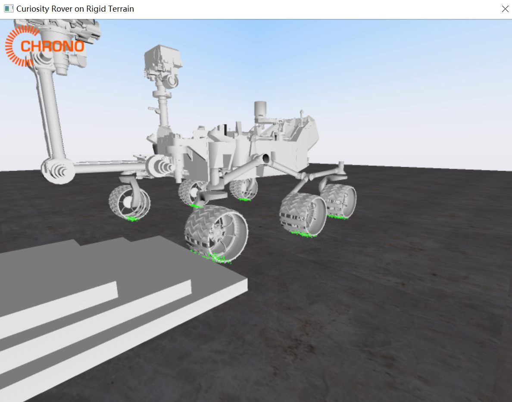
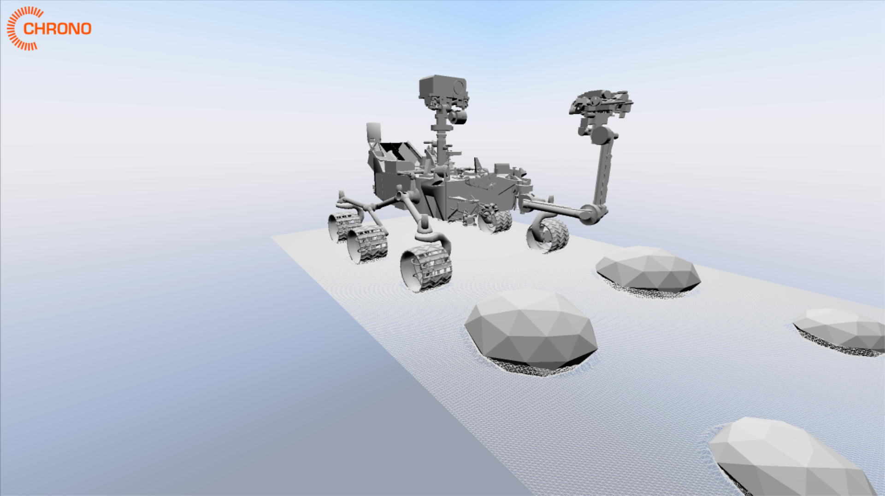
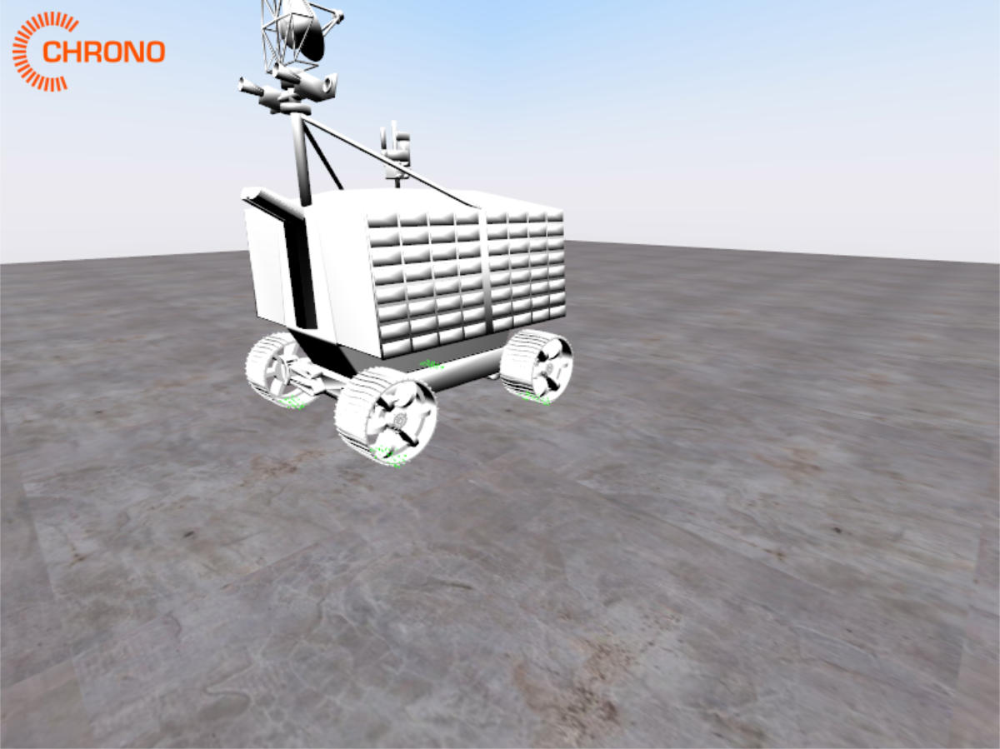
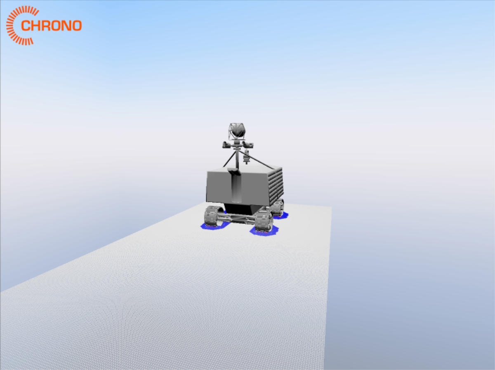
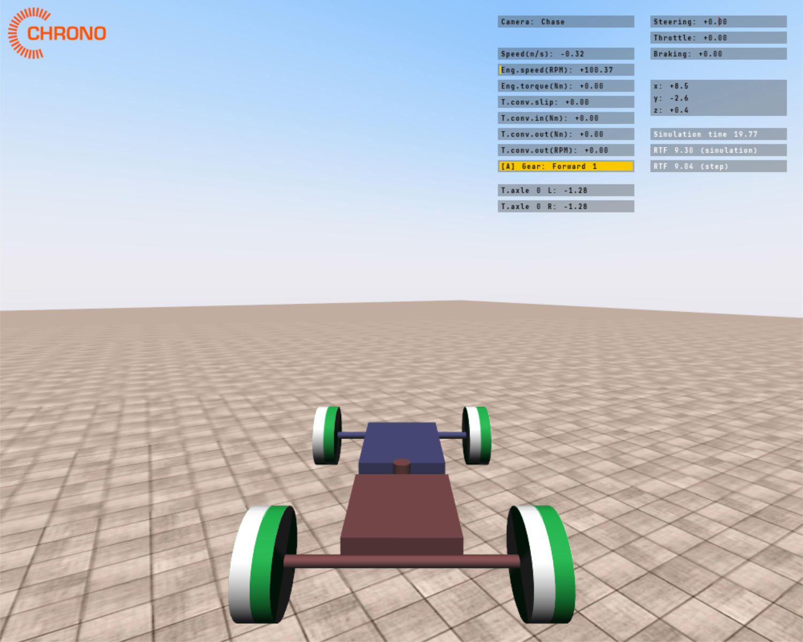
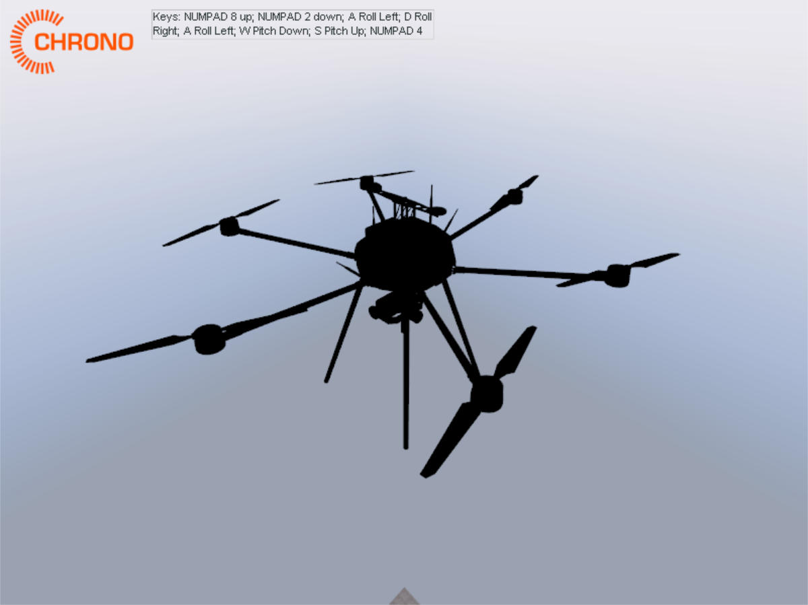
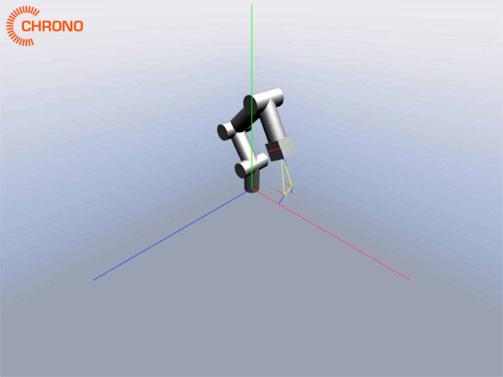

Chrono 自带示例的列表
- 好奇号行驶在刚体地面 demo_ROBOT_Curiosity_Rigid

- 好奇号的土壤接触模型(Soil Contact Model, SCM) demo_ROBOT_Curiosity_SCM

- 探测车行驶在刚体地面 demo_ROBOT_Viper_Rigid

- 探测车行驶的土壤接触模型 demo_ROBOT_Viper_SCM

- 铰链车(VEHicle) demo_VEH_ArticulatedVehicle

- 小型六旋翼无人机 demo_ROBOT_LittleHexy

- 工业机械臂 demo_ROBOT_Industiral
